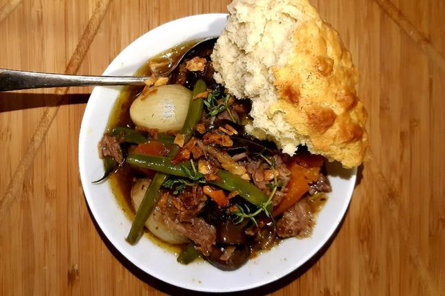

Poitjie-kos Recipe

This is a quick recipe for niggas that can't cook nothing. So, here, have some Poitjie-kos lil nigga
Ingredients
- 2 tbs olive oil
- 2.5kg stewing beef or oxtail (bone in)
- 3 celery sticks, choppes
- 5 carrots, thickly sliced
- 10 cloves garlic, sliced
- dark beer
- green beans
Steps
- Heat the potjie pot, add the oil and leave until smoking.
- Coat the meat in the well-seasoned flour and add to the oil. Brown the meat well, in batches if needed. Remove from pot and set aside.
- Add the whole onions, garlic, bay leaves and thyme to the pan. Cook until there is some caramelisation. Return the meat to the pan and start to layer up the celery, carrots and mushrooms.
- Mix the mustard into the stock and add to the pot with the beer. The liquid should just cover the meat. Place the lid on the pot and leave it to cook for 2.5 to 3.5 hours or until meat falls off the bone. Do not be tempted to stir. Remember to keep adding coals as and when they are needed so the heat remains underneath the pot.
- Add the green beans to the pan, return the lid to the pot and cook for a further 30 mins. Serve with bread.